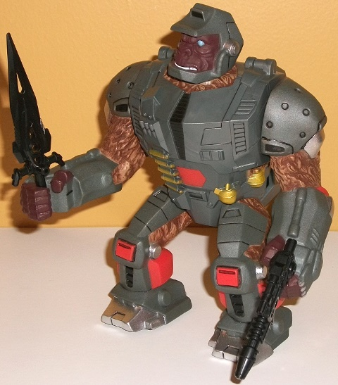
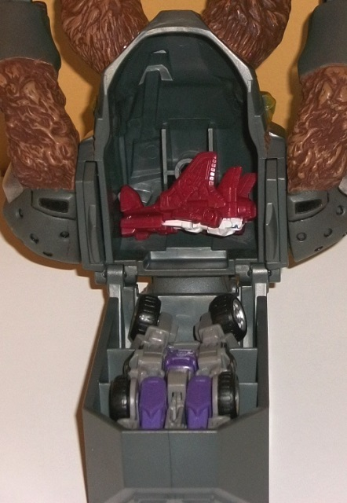
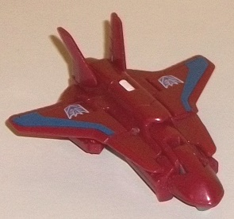
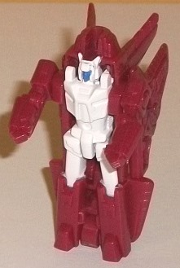
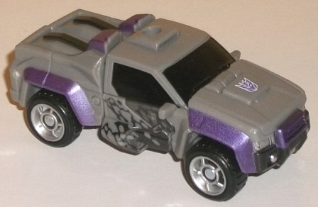
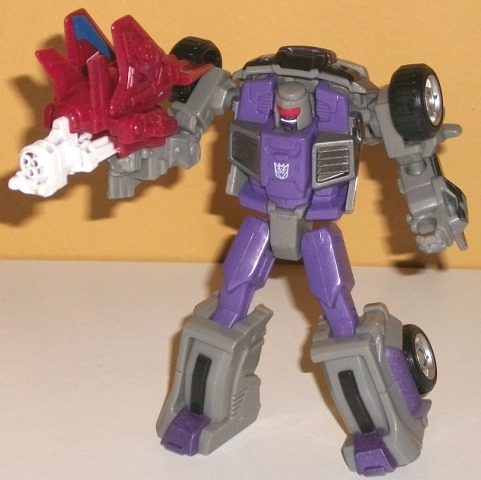

Oilmaster
(BotCon Exclusive)
Oilmaster
(BotCon Exclusive)
Allegiance
: Decepticon
Oilmaster
(Pretender Shell)


Size
: Between Voyager and Ultra
(in terms of size/mass) (comes in a 5-pack with
Autobot
Stepper
,
Battletrap
,
Megatron
,
and
Packrat
)
Color Scheme
: Swirly gray, dark
brown, and some black, white, metallic silver, metallic greenish gold,
light blue, light red, and light brown
Individual Rating
: 7.5
Oilmaster is a redeco
of... wait, he's a new mold? As in made JUST FOR BOTCON?! That is... incredibly
impressive, FunPub. Granted, this part of Oilmaster is "just" a Pretender
shell and not a full-fledged Transformer himself, but it's still darned
cool. Oilmaster is based off of a cancelled Pretender shell shown at BotCon
1996, and is basically a gorilla in a robo-suit. His proportions are wide
and muscular-- if you look at him from a side view his backpack is rather
large, though not nearly as egregiously so as with many of the original
Pretenders, and only from that one view does it look too big. Mold-wise
he's got lots of great details, but what really helps bring out all these
details is the EXCELLENT paint job Oilmaster has. His "base" color is a
fairly basic swirly gray, but his gorilla fur parts are painted dark brown,
with a very nice light brown "brush" over the rather intricately-detailed
fur that really makes it look almost like a custom paint job. He's got
blue eyes, white teeth for a nice Decepticon-y sneer on his face, and several
details on the robotic parts of his mode, such as pistons, vents, and even
little circles on his shoulders that are said in his bio to ooze oil--
hence his name. He's got quite a lot of "black paint wash" over his arms
and legs to bring out a lot of this robotic detail, which is another really
nice touch. Beyond just the wash, there's also some black on his chest,
lower legs, and a few other minor areas. There's some light red on the
legs and stomach, which contrasts quite well against his otherwise fairly
dark color scheme. An excellent, very metallic shade of silver is used
for his feet, knee hinges, and a few other minor parts. To help contrast
against the silver, the weapons and ammo belt around his waist are also
painted metallic gold-- though it is a greenish version of the color. I
think a straight gold would have worked better. All in all it's a rather
varied color scheme, especially given that his base color is gray. Oilmaster
comes with two weapons-- a fairly standard sword and gun that were taken
from
Constructbot
molds. They fit well
in his hands-- as do most weapons with standard ports-- and both weapons
can be stored in little holes on the back end of Oilmaster's backpack.
Speaking of the backpack, this is where Oilmaster's other two components
are stored-- if you open up the backpack via a hinge that folds up, you
can see that the car portion is stored in the upper section (with its hood
in mid-transformation to help it take up less space), and this portion
stores in very snugly. The Targetmaster jet component is just sort of left
to rattle around in the cavity in his back, but it's not like it's going
to get damaged there, so I don't mind it. As for articulation, Oilmaster
can rotate his head, as well as move his arms back-and-forth at the shoulders.
This isn't all that much, of course, but Pretender shells generally didn't
have much articulation since they had to keep a robot inside them, and
this is mostly in keeping with that. (Plus, his solid legs probably keep
him from falling over due to the weight of his backpack.) That said, elbow
and/or wrist articulation would have been appreciated.\
(NOTE: Because the following two toys are
repaints, the rest of this is not a full-blown review. This mainly covers
any changes made to the two and their color schemes, and merely compares
them to the original versions of these molds. For a review on Generations
Legends Swerve w/ Flanker-- the original versions of these molds-- go
here
.)
Oilmaster
(Targetmaster Robot)


Size
: Legends partner
Difficulty of Transformation
: Very
Easy
Color Scheme
: Dull red, white, and
some moderately light gray and dull dark periwinkle
Individual Rating
: 6.2
Oilmaster is a "Double
Pretender"-- and, just like "regular" Pretenders, both the shell and the
robots inside are the same dude, so all three of Oilmaster's components
are Oilmaster. The small Targetmaster component of Oilmaster is, to my
knowledge, not colored to look like any homage in particular. The main
color is a nice dull shade of red, close to fuchsia-- it looks pretty nifty
in jet mode when combined with the dark periwinkle stripes and Decepticon
symbols on the wings-- both of them contrast against the red very well.
In robot mode, the main body and upper legs (along with the barrel for
weapon mode) are painted white, which again contrasts against the red nicely,
although here it seems to be more of an "Autobot-y" color scheme compared
to the vehicle mode. There's a bit of periwinkle paint on the face though,
and just a titch of gray plastic used for the handle for weapon mode. Overall
it's pretty nifty color scheme for a small guy, with the shades used being
far from primary-- it also brings some more color to the trio of Oilmaster
components.
No mold changes have
been made to this part of Oilmaster.
Oilmaster
(Larger Inner Robot)


Size
: Legend
Difficulty of Transformation
: Very
Easy
Color Scheme
: Moderately light gray,
black, and some royal purple, metallic purple, white, silver, and light
red
Individual Rating
: 8.4
Oilmaster's larger inner
robot is based on his very brief comic appearance in an eHOBBY comic--
Swerve's robot mode looks moderately like Oilmaster's inner robot in that
comic, so this fits pretty well. Again based on that comic, Oilmaster's
color scheme here is light gray (but not that blah milky shade, fortunately),
black, and purple-- certainly a very "Decepticon-y" color scheme. There
are two shades of purple-- there's a royal shade of the color used in robot
mode for the main body and upper legs, as well as some metallic purple
paint used on the vehicle mode wheel covers, front grill, and the robot
feet. I think the royal purple plastic looks slightly better, though both
shades contrast against the other colors pretty nicely. It's rather odd
that for the wheel covers in vehicle mode, only the top and front of each
cover are painted, whereas the back third of each cover is left unpainted
gray. The black is mostly used where you think it'd be appropriate-- the
tires and the windows-- as well as a bit on the lower robot legs and grill.
My favorite paint apps on Oilmaster are also black, on the side doors--
they look like oil splatters, which not only fit Oilmaster's name but make
the vehicle mode in particular look more unique than it otherwise would
have. There's also a bit of silver to mix things up even more, on the headlights
and wheel hubs. Finally, on the robot face there's a nice light red visor
and white stripe along the molded-in sneer/grin, which helps emphasize
A. That this is the same guy as the gorilla Pretender shell and B. Helps
make the face look more like Oilmaster's previous brief comic appearance,
where he had similarly colored features.
No mold changes have
been made to this part of Oilmaster.
Oilmaster Bio
:
FUNCTION: The Bounty Hunter
MOTTO: "You can't run and you can't
hide."
Until twenty stellar cycles ago, the
Transtech had not even heard of a Double Pretender. Even after that the
idea was still considered to be myth and fable by most. Oilmaster, though,
proves that Double Pretenders do in fact exist... and that they are bone-chillingly
effective at their jobs. While the Pretender process has been studied and
documented, no others have shown the ability to control their forms to
the degree that Oilmaster can. He is literally a one bot team when separated
from his shell-- Oilmaster can control his beast, aerial, and ground vehicle
forms simultaneously and in deadly unison. Oilmaster uses this overwhelming
force to track and capture any bounty for which he will get paid. Credits
are good, barrels of crude oil are better.
Oilmaster is an army and an arsenal.
At his disposal are an onyx-tipped qualtablade, various toxin-spewing valves
protruding from his shoulder armor, as well as a High-Raz prismatic detonator
that hurls unstable energy grenades distances of over five mechanometers.
If those weapons aren't enough, his aerial form can convert into a trionic
blaster, which Oilmaster refers to as his "alley-cleaner" given its ammunition's
tendency to scatter when fired.
Strength: 9.0
Intelligence: 5.0
Speed: Various
Endurance: 7.0
Rank: 4.0
Courage: 7.0
Fireblast: 8.0
Skill: 10.0
Oilmaster is an incredibly
impressive BotCon exclusive, with the entirely new, very well-painted Pretender
shell drawing most of the kudos. Having the larger robot Oilmaster component
fit in so snugly into the backpack was also a nice accomplishment, and
getting two robots inside the shell instead of one was a nice touch. The
larger robot component is a nice homage to Oilmaster's previous brief comic
appearance with some nice additional paint apps, and the smaller robot
component has a nice color scheme as well. Highly recommended-- in terms
of execution/originality this is my favorite exclusive from the 2015 set,
and one of my favorite BotCon exclusives period, much of it due to the
combination of ingeniousness and sheer ambition put into this guy, a very
obscure Transformer.
Reviews by Beastbot
Back to BotCon/OTFCC
Exclusives Index